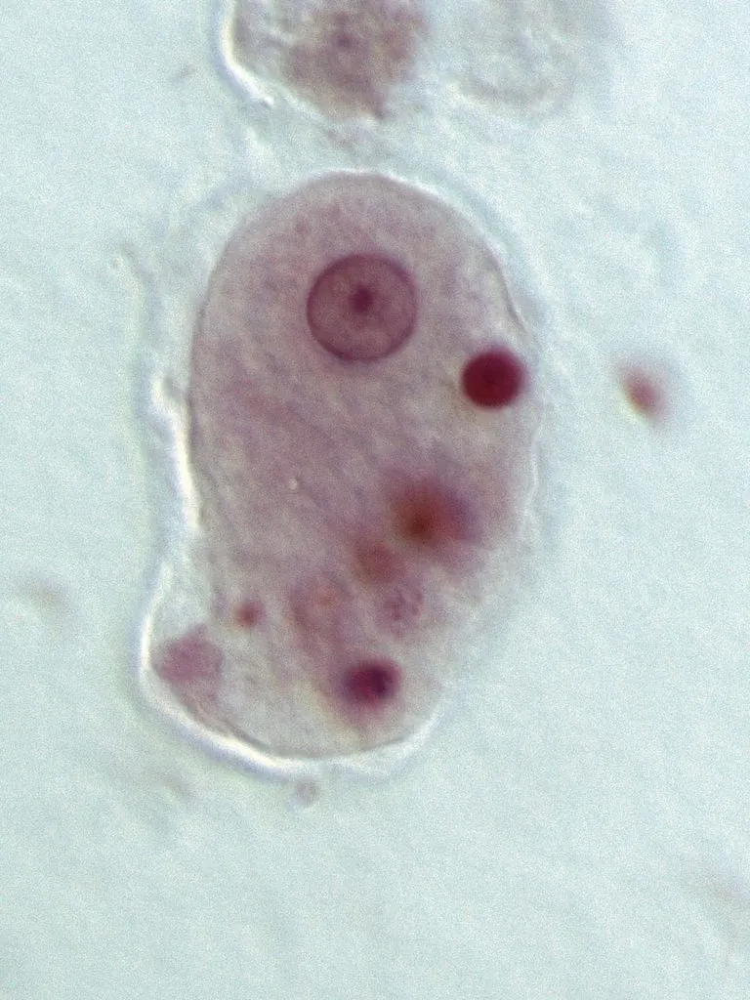

其他无脊椎动物 · 动物界
溶组织内阿米巴 Entamoeba histolytica

能侵入肠壁引起阿米巴痢疾的变形虫，包囊经粪口传播污染饮水与食物，可致肝脓肿，防控重在饮水与手卫生。
- 分类
- 门变形虫门纲叶足纲目变形虫目科内阿米巴科属内阿米巴属
- 栖息环境
- 人的结肠黏膜与肝脏，包囊随粪便排入水体与食物
- 地理分布
- 世界性分布，卫生条件较差地区感染率较高，中国部分地区有散发病例
- 保护级别
- 无保护问题；为肠道寄生虫，防控靠饮水卫生与手卫生
物种志
溶组织内阿米巴的生活史分为滋养体和包囊两个阶段。滋养体直径约十五至二十微米，形态不规则，靠伪足运动，能分泌蛋白酶溶解组织，侵入结肠黏膜形成溃疡。包囊呈球形，直径约十至二十微米，成熟时含四个细胞核，囊壁厚，能在外界存活数周，是传播的唯一形态。
它呈世界性分布，在卫生条件较差的地区感染率较高，中国部分地区仍有散发病例。感染途径是粪口传播：包囊随粪便排出，污染饮水、食物、蔬菜或手，被吞食后在肠道脱囊，滋养体侵入结肠壁，引起阿米巴痢疾，表现为腹痛、腹泻、黏液血便，严重时形成肠穿孔；滋养体还可经血流进入肝脏，形成阿米巴肝脓肿。污染的水源、未洗净的生菜和带菌者的手是主要传播环节。防护的关键是饮用煮沸或合格消毒的水，饭前便后洗手，生食蔬果要彻底清洗，托幼机构和餐饮从业人员应定期检查。治疗需在医生指导下使用抗阿米巴药物。
形态与习性
- 滋养体直径十五至二十微米，靠伪足运动
- 包囊球形，含四个核，囊壁厚，可存活数周
- 感染途径粪口传播，包囊污染饮水、食物或手
- 症状腹痛、腹泻、黏液血便，可致肠穿孔
- 并发症滋养体经血流进入肝脏形成肝脓肿
- 防护饮水煮沸、饭前便后洗手、蔬果洗净
趣味知识
- 它靠伪足钻进肠壁，把黏膜溶出一个个小溃疡。
- 包囊在外界能活好几周，凉拌生菜没洗净就可能带进去。
- 它有时会跑到肝脏里做成脓肿，比腹泻更难缠。